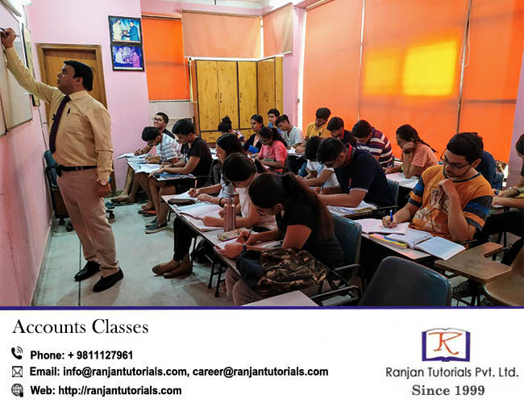
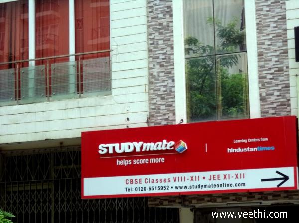
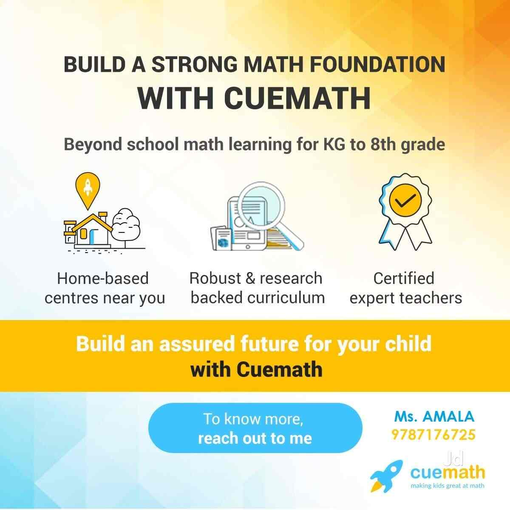

Best tuitions in Indirapuram
Navigating the world of coaching classes can be difficult anywhere, but the task at hand gets even more difficult in Indirapuram, where it seems like a new tuition centre opens every other week. If you find yourself googling “tuitions near me” all the time, then don’t worry, because the team at BestinIndirapuram decided to do all the hardwork for you. Here, we provide you with the top 5 tuitions in Indirapuram. We talked with the alumni, read all the reviews, and talked to current students for the purposes of this list. There was some cutthroat competition, but in no particular order, here are the best coaching classes in Indirapuram:
Ranjan Tutorials

Located near Mangal Chowk, Ranjan tutorials provides classes for
students from classes 1st-12th, with commerce classes being their
speciality. Preparation coaching for CA/CS/CFA is also a big focus at
Ranjan tutorials. The faculty is super nice as well as super talented,
and they answered each query of our team with passion and patience
alike. The batches are kept small so that each student can get
individual attention. Additionally, there are no limits to doubt
classes, which means that the experienced faculty would help your
child until the concepts are crystal-clear in his or her brain. Ranjan
sir himself teaches commerce subjects to 11th grade and up students.
Cab services are also available, if you are not willing to pick up or
drop your child personally. The contact information and address is as
follows:
Address: Plot #279, Near Cambridge School, Niti Khand I,
Indirapuram, Ghaziabad, Uttar Pradesh 201014
Phone: 098111 27961
Education Park Coaching Classes
Education Park is one of the best places in the city for you if you
are a student. And even more so, if you happen to be interested in
science. So, head on over and schedule a trial class at Education
Park, and trust us, you would not be disappointed. The alumni form
this institute only had excellent things to say about it, and so did
the current students, a lot of whom we interviewed for this list. The
faculty is gracious and kind, and enables students to achieve their
best self. Located at the centre of the city, Education Park is
definitely one of the best coaching classes in the city. Students from
classes 1st to 12th are more than welcome to apply. Here are their
contact details:
Address: Abhay Khand 3, Pocket 4, Abhay
Khand, Indirapuram, Ghaziabad, Uttar Pradesh 201014
Phone: 0120
473 1119
Studymate - CBSE coaching

If one happens to be talking about the best tuition centres in
Indirapuram, the name of Studymate cannot remain out of contention for
too long. With a strong team of experienced teachers that are
ever-ready to solve your doubts (there won’t be many, because they are
that good), Studymate also provides you with great infrastructure and
regular tests. What more can one want! So, parents, if you want the
marks of your child to improve, look no further than Studymate.The
location and the contact information is given below. One meeting with
the faculty would clear all your doubts regarding fees, timings and
convenience.
Address: Indirapuram, Dr Sushila Naiyar Marg, Niti Khand I,
Indirapuram, Ghaziabad, Uttar Pradesh 201014
Phone: 082871 82871
Bhatnagar Tuition Classes

If you ask anyone around town for a recommendation regarding coaching
classes in Indirapuram, the name of the reputed Bhatnagar tuition
classes will definitely pop up sooner or later. With flexible hours,
and 24x7 support for its students, this tuition definitely deserves to
be on this list. The team at BestinIndirapuram found out that the
faculty is quite renowned, and extremely polite as well. They will
take good care of your kids, and can even become possible mentors for
them. Just like all the others in this list, the alumni and the
current batch of students only had good things to say about the
teachers at Bhatnagar classes. Their students range from pre-pubescent
teens all the way up to 12th graders. We recommend that you give them
a call or visit them at the address given below to satisfy all your
queries:
Address: Orange County, Ahinsa Khand 1, Indirapuram, Ghaziabad,
Uttar Pradesh 201014
Phone: 099115 83846
Cuemath Center

Last, but definitely not the least if you ask us, is Cuemath Center,
Indirapuram. Another solid option when it comes to the world of
coaching classes, this Indirapuram star teaches maths to students from
classes 1st to 12th, and does an amazing job in doing so, if the
experience of the alumni is anything to go by. The talented faculty
provides an energising and exciting atmosphere in the classroom,
helping their students become their best selves. Not just using books
and notes, the real-life experience of the faculty is what shines
through in their lectures. A passionate group of people, the folks at
Cuemath will for sure play a big part in transforming the grades as
well as the lives of your children. For more information about this
coaching class, please contact them at:
Address: B313, Rajhans Kutumb, Ahinsa Khand 1, Indirapuram,
Ghaziabad, Uttar Pradesh 201010
Phone: 085058 03339
So, that was it! Now you know what are the best tuition classes in Indirapuram. Liked it? Great! Check our other articles here. And if you think someone needs this information, don’t hesitate to share this page on WhatsApp, Facebook or even through word-of-mouth.